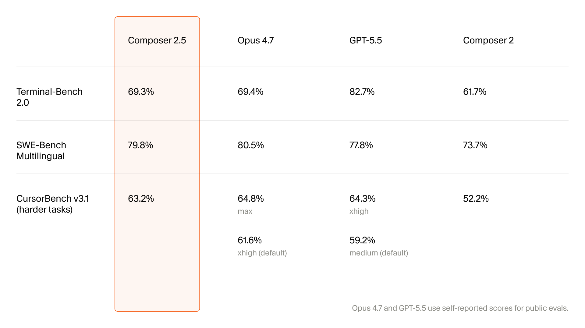

agiscore.
Side-by-side benchmark snapshots for frontier coding agents. First entry: Cursor's Composer 2.5 launch — May 2026.

Composer 2.5 — May 2026
| Benchmark | Composer 2.5 | Opus 4.7 | GPT-5.5 | Composer 2 |
|---|---|---|---|---|
| Terminal-Bench 2.0 | 69.3% | 69.4% | 82.7% | 61.7% |
| SWE-Bench Multilingual | 79.8% | 80.5% | 77.8% | 73.7% |
| CursorBench v3.1harder tasks | 63.2% | 64.8% max61.6% xhigh (default) | 64.3% xhigh59.2% medium (default) | 52.2% |